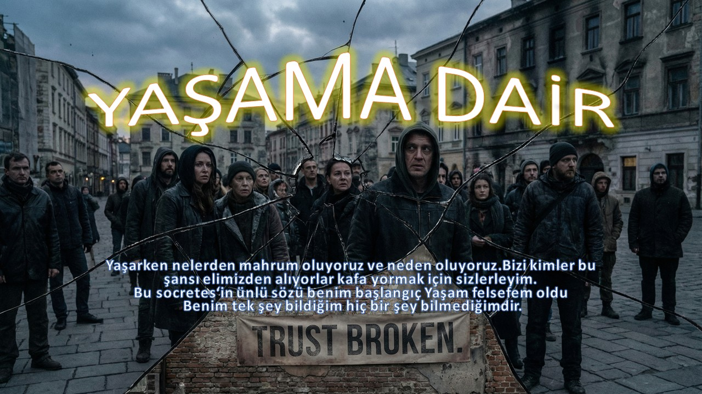

02Türkei im Griff von politischer Angst und Korruption
Gedanken über die Gesellschaft der Türkei, Angst und Korruption.
YAŞAMA DAİR · Hüseyin Emil
Sprachnotizen von Hüseyin Emil über das Leben. Die Aufnahmen sind auf Türkisch. Beginnen Sie mit einer Folge Ihrer Wahl.

02Gedanken über die Gesellschaft der Türkei, Angst und Korruption.
Der feine Schmerz, den wir beim Rückblick empfinden, ist eigentlich unser größter Schatz...
Kontakt
Ihre Gedanken gehören dazu.
Ihre Perspektive ist willkommen. Teilen Sie sie respektvoll mit uns.
Für eine private Nachricht können Sie eine E-Mail senden.
Schreiben Sie mir